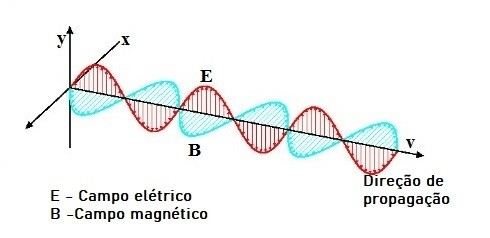

Ondulatória
As ondas são perturbações que se propagam pelo espaço sem transporte de matéria, apenas de energia.
O elemento que provoca uma onda é denominado fonte, por exemplo, uma pedra lançada nas águas de um rio geraram ondas circulares.
São exemplos de ondas: ondas do mar, ondas de rádio, som, luz, raio-x, micro-ondas dentre outras.
A parte da Física que estuda as ondas e suas características é chamada de ondulatória.

Para caracterizar as ondas usamos algumas grandezas. Entre elas, Amplitude, comprimento de Onda, Velocidade, Frequência, Periodo.
Tipos de Ondas
Ondas Mecânicas: para que haja propagação, as ondas mecânicas necessitam de um meio material, por exemplo, as ondas sonoras e as ondas em uma corda.
Ondas Eletromagnéticas: nesse caso, não é necessário que haja um meio material para que a onda se propague, por exemplo, as ondas de rádio e a luz.
Classificação das ondas
Ondas Unidimensionais: as ondas que se propagam em uma direção.
Exemplo: ondas em uma corda.
Ondas Bidimensionais: as ondas que se propagam em duas direções.
Exemplo: ondas se propagando na superfície de um lago.
Ondas Tridimensionais: as ondas que se propagam em todas as direções possíveis.